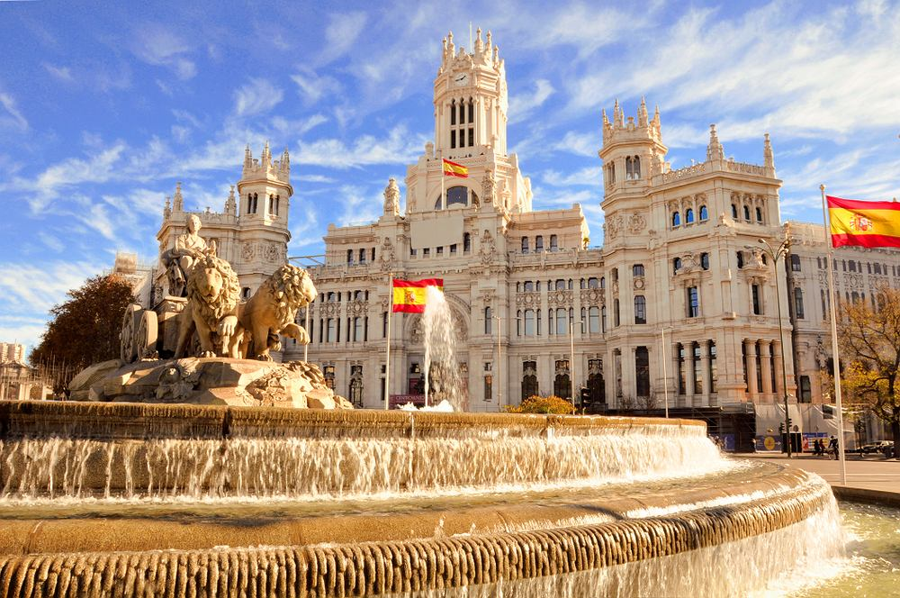

O Hiszpanii
Hiszpania to jeden z najczęściej odwiedzanych krajów świata, słynący z doskonałego klimatu, bogatej historii i wyjątkowej gościnności. Każdy region kraju oferuje unikalne doświadczenia:
- Dziedzictwo kulturowe: Fascynująca mieszanka wpływów rzymskich i mauretańskich – od monumentalnych katedr po zachwycające pałace.
- Regionalny charakter: Każda wspólnota autonomiczna pielęgnuje własne, unikalne tradycje, język i styl życia.
- Kulinarna podróż: Raj dla smakoszy – od światowej sławy tapas i paelli, po wyśmienite wina.
- Zróżnicowane krajobrazy: Od słonecznych plaż Morza Śródziemnego po ośnieżone szczyty górskie.

Dlaczego warto odwiedzić Hiszpanię?
Hiszpania zachwyca wspaniałym klimatem, niezwykłą architekturą oraz wyśmienitą kuchnią śródziemnomorską.
Co roku odwiedzają ją miliony turystów z całego świata, szukających zarówno wypoczynku, jak i kulturowych uniesień.
Najpopularniejsze miasta


Zdjęcie z internetu
Poniższa grafika została załadowana bezpośrednio z zewnętrznego serwera za pomocą adresu URL:

Grafika wektorowa SVG
Kompozycja geometryczna reprezentująca nowoczesną sztukę hiszpańską:
Przydatny link
Aby dowiedzieć się więcej o historii i kulturze tego regionu, odwiedź zewnętrzny serwis:
Wpis o Hiszpanii w serwisie Wikipedia